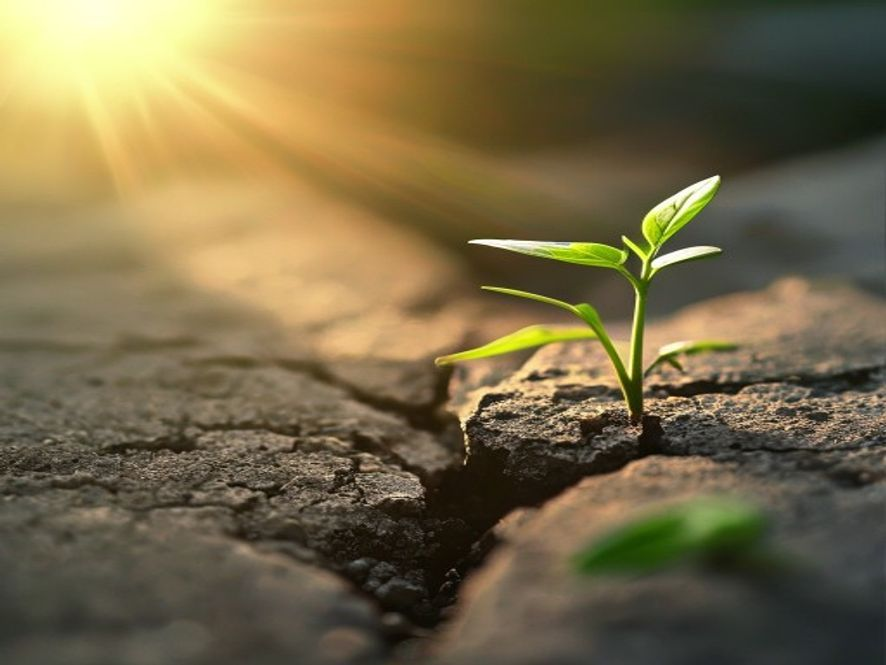

[ВИЗУАЛЬНЫЙ ПОСТ]

Вершина начинается с первого шага
Даже самый длинный путь начинается с одного движения. Твой первый шаг уже ждёт. #визуал #вдохновение #психология
#21 visual • Канал Психология/Саморазвитие